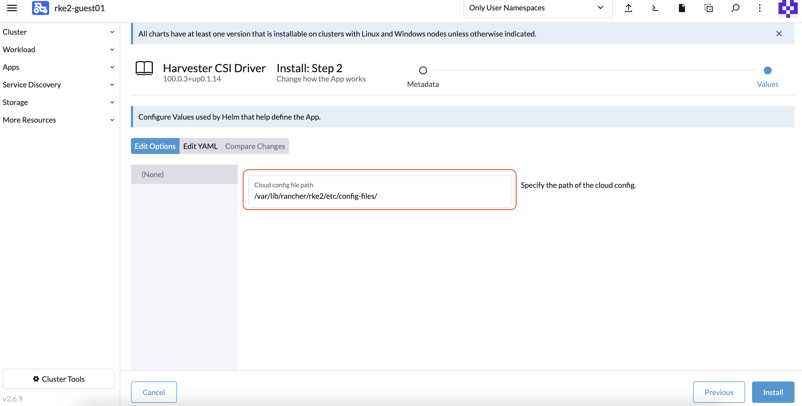
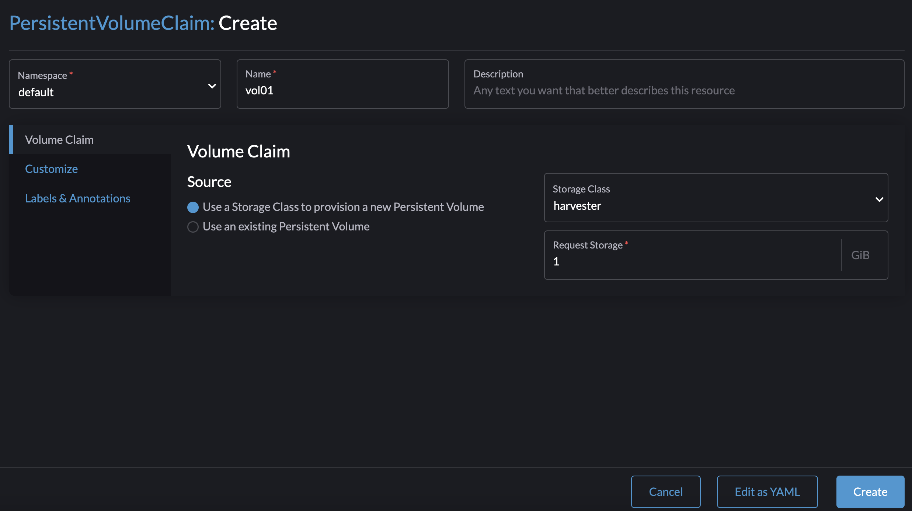
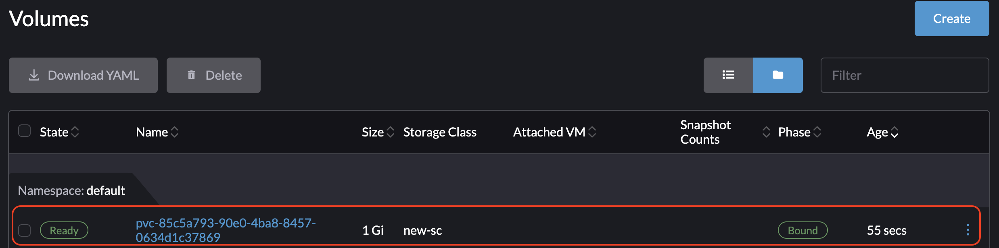

Pilote CSI Harvester
Le pilote d’interface de stockage de conteneurs Harvester (CSI) fournit une interface CSI standard utilisée par les clusters Kubernetes invités. Il se connecte au cluster hôte et branche à chaud les volumes hôtes aux machines virtuelles pour offrir des performances de stockage natives.
Le pilote CSI Harvester prend en charge les fonctionnalités suivantes :
| Version du pilote CSI Harvester | SUSE Virtualization Version | Hiérarchisation du stockage | Volumes RWX | Redimensionnement en ligne | Stockage tiers | Instantanés de volume |
|---|---|---|---|---|---|---|
0.1.15 |
Toutes les versions |
✔ |
✖ |
✖ |
✖ |
✖ |
0.1.20 |
v1.4 et version ultérieure |
✔ |
✔ |
✖ |
✖ |
✖ |
0.1.24 |
v1.6 et version ultérieure |
✔ |
✔ |
✔ |
✔ |
✖ |
0.1.25 |
v1.7 et version ultérieure |
✔ |
✔ |
✔ |
✔ |
✔ |
|
Un problème connu dans v0.1.20 du pilote CSI Harvester empêche les volumes de se débloquer lorsque le cluster hôte exécute une version SUSE Virtualization qui a été publiée avant v1.4.0. Ce problème a été corrigé dans v0.1.21. Si votre système est affecté, vous pouvez suivre le contournement suggéré.
|
Déploiement
Conditions préalables
-
Le cluster Kubernetes est construit sur SUSE Virtualization machines virtuelles.
-
Les SUSE Virtualization machines virtuelles qui fonctionnent comme nœuds Kubernetes invités sont dans le même espace de noms.
|
Actuellement, le pilote CSI Harvester ne prend en charge que les volumes en lecture-écriture (RWO) à nœud unique. Vérifiez issue #1992 pour obtenir des informations sur le support possible des volumes multi-nœuds en lecture seule (ROX) et en lecture-écriture (RWX). |
Déploiement avec le pilote de nœud Harvester RKE2
Lors de la création d’un cluster Kubernetes en utilisant le pilote de nœud Rancher RKE2, le pilote CSI Harvester sera déployé automatiquement lorsque le fournisseur de cloud Harvester est sélectionné.

Installer le pilote CSI manuellement dans le cluster RKE2
Si vous préférez installer le pilote CSI Harvester sans activer le fournisseur de cloud Harvester, vous pouvez vous référer aux étapes suivantes :
Prérequis pour l’installation manuelle
Assurez-vous d’avoir les prérequis suivants en place :
-
Vous avez
kubectletjqinstallés sur votre système. -
Vous avez le fichier
kubeconfigpour votre cluster Harvester sur matériel sans système d’exploitation. Vous pouvez trouver le fichierkubeconfigsur l’un des nœuds de gestion Harvester dans le chemin/etc/rancher/rke2/rke2.yaml.export KUBECONFIG=/path/to/your/harvester-kubeconfig
Effectuez les étapes suivantes pour déployer manuellement le pilote CSI Harvester :
Déployer le pilote CSI Harvester
-
Générer le
cloud-config. Vous pouvez générer le fichiercloud-configen utilisant le script generate_addon_csi.sh. Il est disponible dans le dépôt harvester/harvester-csi-driver.<serviceaccount name>correspond généralement au nom de votre cluster invité, et<namespace>doit correspondre à l’espace de noms du pool de machines../generate_addon_csi.sh <serviceaccount name> <namespace> RKE2
La sortie générée sera similaire à celle-ci :
########## cloud-config ############ apiVersion: v1 clusters: - cluster: <token> server: https://<YOUR HOST HARVESTER VIP>:6443 name: default contexts: - context: cluster: default namespace: default user: rke2-guest-01-default-default name: rke2-guest-01-default-default current-context: rke2-guest-01-default-default kind: Config preferences: {} users: - name: rke2-guest-01-default-default user: token: <token> ########## cloud-init user data ############ write_files: - encoding: b64 content: YXBpVmVyc2lvbjogdjEKY2x1c3RlcnM6Ci0gY2x1c3RlcjoKICAgIGNlcnRpZmljYXRlLWF1dGhvcml0eS1kYXRhOiBMUzB0TFMxQ1JVZEpUaUJEUlZKVVNVWkpRMEZVUlMwdExTMHRDazFKU1VKbFZFTkRRVklyWjBGM1NVSkJaMGxDUVVSQlMwSm5aM0ZvYTJwUFVGRlJSRUZxUVd0TlUwbDNTVUZaUkZaUlVVUkVRbXg1WVRKVmVVeFlUbXdLWTI1YWJHTnBNV3BaVlVGNFRtcG5NVTE2VlhoT1JGRjNUVUkwV0VSVVNYcE5SRlY1VDFSQk5VMVVRVEJOUm05WVJGUk5lazFFVlhsT2FrRTFUVlJCTUFwTlJtOTNTa1JGYVUxRFFVZEJNVlZGUVhkM1dtTnRkR3hOYVRGNldsaEtNbHBZU1hSWk1rWkJUVlJaTkU1VVRURk5WRkV3VFVSQ1drMUNUVWRDZVhGSENsTk5ORGxCWjBWSFEwTnhSMU5OTkRsQmQwVklRVEJKUVVKSmQzRmFZMDVTVjBWU2FsQlVkalJsTUhFMk0ySmxTSEZEZDFWelducGtRa3BsU0VWbFpHTUtOVEJaUTNKTFNISklhbWdyTDJab2VXUklNME5ZVURNeFZXMWxTM1ZaVDBsVGRIVnZVbGx4YVdJMGFFZE5aekpxVVdwQ1FVMUJORWRCTVZWa1JIZEZRZ292ZDFGRlFYZEpRM0JFUVZCQ1owNVdTRkpOUWtGbU9FVkNWRUZFUVZGSUwwMUNNRWRCTVZWa1JHZFJWMEpDVWpaRGEzbEJOSEZqYldKSlVESlFWVW81Q2xacWJWVTNVV2R2WjJwQlMwSm5aM0ZvYTJwUFVGRlJSRUZuVGtsQlJFSkdRV2xCZUZKNU4xUTNRMVpEYVZWTVdFMDRZazVaVWtWek1HSnBZbWxVSzJzS1kwRnhlVmt5Tm5CaGMwcHpMM2RKYUVGTVNsQnFVVzVxZEcwMVptNTZWR3AxUVVsblRuTkdibFozWkZRMldXWXpieTg0ZFRsS05tMWhSR2RXQ2kwdExTMHRSVTVFSUVORlVsUkpSa2xEUVZSRkxTMHRMUzBLCiAgICBzZXJ2ZXI6IGh0dHBzOi8vMTkyLjE2OC4wLjEzMTo2NDQzCiAgbmFtZTogZGVmYXVsdApjb250ZXh0czoKLSBjb250ZXh0OgogICAgY2x1c3RlcjogZGVmYXVsdAogICAgbmFtZXNwYWNlOiBkZWZhdWx0CiAgICB1c2VyOiBya2UyLWd1ZXN0LTAxLWRlZmF1bHQtZGVmYXVsdAogIG5hbWU6IHJrZTItZ3Vlc3QtMDEtZGVmYXVsdC1kZWZhdWx0CmN1cnJlbnQtY29udGV4dDogcmtlMi1ndWVzdC0wMS1kZWZhdWx0LWRlZmF1bHQKa2luZDogQ29uZmlnCnByZWZlcmVuY2VzOiB7fQp1c2VyczoKLSBuYW1lOiBya2UyLWd1ZXN0LTAxLWRlZmF1bHQtZGVmYXVsdAogIHVzZXI6CiAgICB0b2tlbjogZXlKaGJHY2lPaUpTVXpJMU5pSXNJbXRwWkNJNklreGhUazQxUTBsMWFsTnRORE5TVFZKS00waE9UbGszTkV0amNVeEtjM1JSV1RoYVpUbGZVazA0YW1zaWZRLmV5SnBjM01pT2lKcmRXSmxjbTVsZEdWekwzTmxjblpwWTJWaFkyTnZkVzUwSWl3aWEzVmlaWEp1WlhSbGN5NXBieTl6WlhKMmFXTmxZV05qYjNWdWRDOXVZVzFsYzNCaFkyVWlPaUprWldaaGRXeDBJaXdpYTNWaVpYSnVaWFJsY3k1cGJ5OXpaWEoyYVdObFlXTmpiM1Z1ZEM5elpXTnlaWFF1Ym1GdFpTSTZJbkpyWlRJdFozVmxjM1F0TURFdGRHOXJaVzRpTENKcmRXSmxjbTVsZEdWekxtbHZMM05sY25acFkyVmhZMk52ZFc1MEwzTmxjblpwWTJVdFlXTmpiM1Z1ZEM1dVlXMWxJam9pY210bE1pMW5kV1Z6ZEMwd01TSXNJbXQxWW1WeWJtVjBaWE11YVc4dmMyVnlkbWxqWldGalkyOTFiblF2YzJWeWRtbGpaUzFoWTJOdmRXNTBMblZwWkNJNkltTXlZak5sTldGaExUWTBNMlF0TkRkbU1pMDROemt3TFRjeU5qWXpNbVl4Wm1aaU5pSXNJbk4xWWlJNkluTjVjM1JsYlRwelpYSjJhV05sWVdOamIzVnVkRHBrWldaaGRXeDBPbkpyWlRJdFozVmxjM1F0TURFaWZRLmFRZmU1d19ERFRsSWJMYnUzWUVFY3hmR29INGY1VnhVdmpaajJDaWlhcXB6VWI0dUYwLUR0cnRsa3JUM19ZemdXbENRVVVUNzNja1BuQmdTZ2FWNDhhdmlfSjJvdUFVZC04djN5d3M0eXpjLVFsTVV0MV9ScGJkUURzXzd6SDVYeUVIREJ1dVNkaTVrRWMweHk0X0tDQ2IwRHQ0OGFoSVhnNlMwRDdJUzFfVkR3MmdEa24wcDVXUnFFd0xmSjdEbHJDOFEzRkNUdGhpUkVHZkUzcmJGYUdOMjdfamR2cUo4WXlJQVd4RHAtVHVNT1pKZUNObXRtUzVvQXpIN3hOZlhRTlZ2ZU05X29tX3FaVnhuTzFEanllbWdvNG9OSEpzekp1VWliRGxxTVZiMS1oQUxYSjZXR1Z2RURxSTlna1JlSWtkX3JqS2tyY3lYaGhaN3lTZ3o3QQo= owner: root:root path: /var/lib/rancher/rke2/etc/config-files/cloud-provider-config permissions: '0644' -
Copiez et collez le contenu de
cloud-init user datadans Machine Pools > Afficher Avancé > Données Utilisateur.
Le fichier
cloud-provider-configsera créé après avoir appliqué les données utilisateur cloud-init ci-dessus. Vous pouvez le trouver sur les nœuds Kubernetes invités dans le chemin/var/lib/rancher/rke2/etc/config-files/cloud-provider-config. -
Configurez le Fournisseur de Cloud soit sur Par défaut - RKE2 Intégré soit sur Externe.

-
Sélectionnez Créer pour créer votre cluster RKE2.
-
Une fois le cluster RKE2 prêt, installez le chart Pilote CSI Harvester depuis le marché Rancher. Vous n’avez pas besoin de changer le chemin cloud-config par défaut.


|
Si vous préférez ne pas installer le pilote CSI Harvester en utilisant Rancher (Applications > Charts), vous pouvez utiliser Helm à la place. Le pilote CSI Harvester est emballé en tant que chart Helm. Pour plus d’informations, reportez-vous à la section https://charts.harvesterhci.io. |
En suivant les étapes ci-dessus, vous devriez être en mesure de voir que ces pods de pilote CSI sont en cours d’exécution dans l’espace de noms kube-system, et vous pouvez le vérifier en provisionnant un nouveau PVC en utilisant la StorageClass par défaut harvester sur votre cluster RKE2.
Déploiement avec le pilote de nœud Harvester K3s
Vous pouvez suivre les étapes [Deploy Harvester CSI driver] décrites dans la section RKE2.
La seule différence réside dans la génération de la configuration cloud-init où vous devez spécifier le type de fournisseur comme k3s :
./generate_addon_csi.sh <serviceaccount name> <namespace> k3sPersonnaliser la StorageClass par défaut
Le pilote CSI Harvester fournit l’interface pour définir la StorageClass par défaut. Si la StorageClass par défaut n’est pas spécifiée, le pilote CSI Harvester utilise la StorageClass par défaut du cluster Harvester hôte.
Vous pouvez utiliser le paramètre host-storage-class pour personnaliser la StorageClass par défaut.
-
Créez une StorageClass pour le cluster Harvester hôte.
Exemple :

-
Déployez le pilote CSI avec le paramètre
host-storage-class.Exemple :

-
Vérifiez que le pilote CSI Harvester est prêt.
-
Sur l’écran PersistentVolumeClaims, créez un PVC. Sélectionnez Utiliser une Storage Class pour provisionner un nouveau Volume Persistant et spécifiez la StorageClass que vous avez créée.
Exemple :

-
Une fois le PVC créé, notez le nom du volume provisionné et vérifiez que le statut est Bound.
Exemple :

-
Sur l’écran Volumes, vérifiez que le volume a été provisionné en utilisant la StorageClass que vous avez créée.
Exemple :

-
StorageClass personnalisée Passthrough
À partir de la version v0.1.15 du pilote CSI Harvester, il est possible de créer un PersistentVolumeClaim (PVC) en utilisant une StorageClass Harvester différente sur le cluster Kubernetes invité.
|
Un pilote CSI Harvester compatible est intégré à chaque version RKE2 prise en charge. |
Conditions préalables
Ajoutez les prérequis suivants à votre cluster Harvester pour garantir que le pilote CSI Harvester affiche correctement les messages d’erreur. Des paramètres RBAC appropriés sont essentiels pour la visibilité des messages d’erreur, en particulier lors de la création d’un PVC avec une StorageClass inexistante, comme indiqué dans l’image ci-dessous :

Suivez ces étapes pour configurer RBAC pour la visibilité des messages d’erreur :
-
Créez un nouveau
clusterrolenomméharvesterhci.io:csi-driveren utilisant le manifeste suivant.apiVersion: rbac.authorization.k8s.io/v1 kind: ClusterRole metadata: labels: app.kubernetes.io/component: apiserver app.kubernetes.io/name: harvester app.kubernetes.io/part-of: harvester name: harvesterhci.io:csi-driver rules: - apiGroups: - storage.k8s.io resources: - storageclasses verbs: - get - list - watch -
Créez un nouveau
clusterrolebindingassocié auclusterroleci-dessus avec leserviceaccountpertinent en utilisant le manifeste suivant.apiVersion: rbac.authorization.k8s.io/v1 kind: ClusterRoleBinding metadata: name: <namespace>-<serviceaccount name> roleRef: apiGroup: rbac.authorization.k8s.io kind: ClusterRole name: harvesterhci.io:csi-driver subjects: - kind: ServiceAccount name: <serviceaccount name> namespace: <namespace>
Assurez-vous que le
serviceaccount nameet lenamespacecorrespondent aux paramètres de votre fournisseur de cloud. Effectuez les étapes suivantes pour récupérer ces détails.-
Trouvez le
rolebindingassocié à votre fournisseur de cloud :$ kubectl get rolebinding -A |grep harvesterhci.io:cloudprovider default default-rke2-guest-01 ClusterRole/harvesterhci.io:cloudprovider 7d1h
-
Extrayez les informations
subjectsde cerolebinding:$ kubectl get rolebinding default-rke2-guest-01 -n default -o yaml |yq -e '.subjects'
-
Identifiez les informations
ServiceAccount:- kind: ServiceAccount name: rke2-guest-01 namespace: default
-
Déploiement
Vous pouvez maintenant créer une nouvelle StorageClass que vous souhaitez utiliser dans votre cluster Kubernetes invité.
-
Pour les administrateurs, vous pouvez créer une StorageClass souhaitée (par exemple, nommée replica-2) dans votre cluster Harvester sur matériel sans système d’exploitation.

-
Ensuite, sur le cluster Kubernetes invité, créez une nouvelle StorageClass associée à la StorageClass nommée replica-2 du cluster Harvester :

-
Lors du choix d’un Provisioner, sélectionnez Harvester (CSI). Le paramètre Host StorageClass doit correspondre au nom du StorageClass créé sur le cluster Harvester.
-
Pour les propriétaires de Kubernetes invités, vous pouvez demander à l’administrateur du cluster Harvester de créer un nouveau StorageClass.
-
Si vous laissez le champ
Host StorageClassvide, le StorageClass par défaut du cluster Harvester sera utilisé.
-
-
Vous pouvez maintenant créer un PVC basé sur cette nouvelle StorageClass, qui utilise le Host StorageClass pour provisionner des volumes sur le cluster Harvester sur matériel sans système d’exploitation.
Support de volume RWX
|
Les volumes RWX ne fonctionnent actuellement qu’avec un réseau de stockage dédié. Problème #7218 suit l’amélioration qui permettra aux volumes RWX d’utiliser divers VLAN sur les clusters invités. |
Conditions préalables
-
Harvester v1.4 ou version ultérieure est installé sur le cluster hôte.
-
Un réseau de stockage est configuré sur le cluster Harvester.
Utilisez exclure pour réserver une plage d’adresses IP pour les machines virtuelles du cluster invité.

-
Le paramètre Réseau de stockage pour volume RWX dans l’interface Longhorn intégrée est activé.
Allez dans Général, puis sélectionnez Réseau de stockage pour volume RWX activé.

-
Vous avez créé un StorageClass RWX sur le cluster Harvester hôte.
Sur le Storage Class : À l’écran de création, cliquez sur Modifier en YAML et spécifiez ce qui suit :
kind: StorageClass apiVersion: storage.k8s.io/v1 metadata: name: longhorn-rwx provisioner: driver.longhorn.io allowVolumeExpansion: true reclaimPolicy: Delete volumeBindingMode: Immediate parameters: numberOfReplicas: "3" staleReplicaTimeout: "2880" fromBackup: "" fsType: "ext4" nfsOptions: "vers=4.2,noresvport,softerr,timeo=600,retrans=5"


-
Les paramètres de contrôle d’accès en fonction du rôle (RBAC) sont à jour.
l’autorisation RBAC utilise un groupe d’API Kubernetes spécifique pour prendre des décisions d’autorisation concernant l’accès aux ressources informatiques ou réseau.
Le pilote CSI Harvester nécessite les nouveaux paramètres RBAC pour prendre en charge les volumes RWX. Pour vérifier les paramètres RBAC, exécutez la commande
kubectl get clusterrole harvesterhci.io:csi-driver -o yaml.# kubectl get clusterrole harvesterhci.io:csi-driver -o yaml apiVersion: rbac.authorization.k8s.io/v1 kind: ClusterRole metadata: ... name: harvesterhci.io:csi-driver ... rules: - apiGroups: - storage.k8s.io resources: - storageclasses verbs: - get - list - watch - apiGroups: - harvesterhci.io resources: - networkfilesystems - networkfilesystems/status verbs: - '*' - apiGroups: - longhorn.io resources: - volumes - volumes/status verbs: - get - list -
Les pods networkfs-manager sont en cours d’exécution.
Pour vérifier l’état des pods networkfs-manager, exécutez la commande
kubectl get pods -n harvester-system | grep networkfs-manager.Exemple :
# kubectl get pods -n harvester-system | grep networkfs-manager harvester-networkfs-manager-2pxhm 1/1 Running 4 (34m ago) 3h41m harvester-networkfs-manager-8tst2 1/1 Running 4 (37m ago) 3h41m harvester-networkfs-manager-xvkgp 1/1 Running 4 (37m ago) 3h41m -
La version du pilote CSI Harvester est v0.1.20 ou ultérieure.

-
La machine virtuelle a deux interfaces réseau : une interface réseau par défaut pour les communications intra-cluster et permettant l’accès depuis le réseau d’infrastructure (externe au cluster Harvester) ; et un réseau qui peut se connecter au réseau de stockage.
Le NAD default/vlan101 est utilisé pour le réseau de stockage.

-
Le client NFS est installé sur chaque nœud du cluster invité.
Exécutez l’une des commandes suivantes pour installer le client NFS.
-
Debian et Ubuntu :
apt-get install -y nfs-common -
CentOS et RHEL :
yum install -y nfs-utils -
SUSE et OpenSUSE :
zypper install -y nfs-client
-
-
Une IP est attribuée manuellement à l’interface réseau de stockage.
Vous pouvez attribuer n’importe quelle IP réservée en utilisant les commandes suivantes :
$ ip link set <storage network nic> up $ ip a add <reserved IP> dev <storage network nic>
Une IP qui est attribuée en utilisant les commandes données ne persiste pas après un redémarrage. Pour rendre l’IP persistante, vous devez l’ajouter au fichier de configuration réseau de votre système d’exploitation invité.
Syntaxe
-
Créez une nouvelle StorageClass sur le cluster invité.
Sur le StorageClass : À l’écran de création, ajoutez un paramètre Classe de stockage hôte et spécifiez la StorageClass RWX que vous avez créée sur le cluster Harvester hôte.

-
Créez un PersistentVolumeClaim (PVC) RWX.
Sur le PersistentVolumeClaim : À l’écran de création, configurez les paramètres suivants :
-
Onglet Volume Claim : Spécifiez la nouvelle StorageClass.

-
Onglet Personnaliser : Sélectionnez De nombreux nœuds lecture-écriture.

-
-
Vérifiez que le PVC RWX a été créé avec succès.

-
Créez deux pods.
Sur le Pod : À l’écran de création, spécifiez le PVC RWX.


|
Vous pouvez suivre les mêmes étapes pour créer un PVC RWX sur le cluster invité, puis l’utiliser sur des pods nécessitant des volumes RWX. |
Redimensionnement de volume en ligne
Si le fournisseur de stockage sous-jacent prend en charge l’expansion de volume en ligne, vous pouvez étendre un volume ReadWriteOnce (RWO) dans le cluster invité même s’il est attaché à une charge de travail en cours d’exécution.
Instantanés de volume
À partir de v0.1.25, le pilote Harvester CSI prend en charge les instantanés de volume, offrant des capacités de sauvegarde et de restauration à un instant donné pour les charges de travail s’exécutant sur des clusters Kubernetes invités.
Mettre à niveau le pilote CSI
|
Le pilote CSI Harvester prend en charge les instantanés de volume à partir de la version v0.1.25. L’utilisation de cette fonctionnalité peut nécessiter des étapes supplémentaires en fonction de votre distribution Kubernetes.
|
Mettre à niveau RKE2
Pour mettre à niveau le pilote CSI, utilisez l’interface utilisateur Rancher pour mettre à niveau RKE2. Assurez-vous que la nouvelle version de RKE2 prend en charge/est fournie avec la version mise à jour du pilote CSI.
-
Allez à ☰ > Gestion des clusters.
-
Trouvez le cluster invité que vous souhaitez mettre à niveau et sélectionnez ⋮ > Modifier la configuration.
-
Sélectionnez Version de Kubernetes.
-
Cliquez sur Enregistrer.